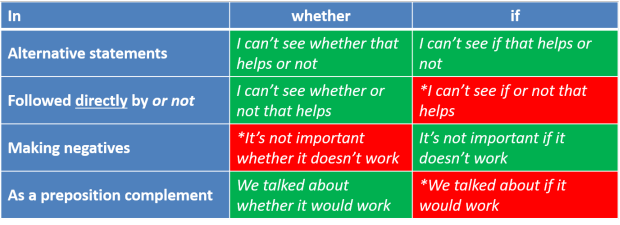

Nominal clauses and phrases
| Do you know when the next train is due? |
The second clause in the sentence above is a nominal clause. It acts, in this case, as the object of the verb know. If you are unsure about the nature of clausal analysis, there is a guide on this site.
The usual way to analyse this question for learners is to refer
to it as an indirect question (to which there is also
a guide on
this site) but there is an alternative view and that is what we
are concerned with here.
(Both the links above open in a new tab so if you want to follow one
or the other now, simply shut the page to return.)
What is a nominal clause? |
Simply put, a nominal clause is a
clause functioning grammatically as a noun.
There are a number of different sorts of these and we are concerned
with five of them here.
 |
As a first mini-task, spot the clause which is acting as a noun
in the following five examples. |
- I don't think stealing in order to eat is wrong.
- What you need to do is open the tap fully.
- I want to come to the wedding.
- I didn't see whoever did the damage.
- I told him he was wrong.
- To be, or not to be, that is the question
- I don't think stealing in order to eat
is wrong.
In this case, we have a non-finite -ing clause acting in two ways:- it is the object of the verb think
and - it is the subject of the verb be and has an adjective complement, wrong.
- it is the object of the verb think
- What you need to do is open the
tap fully.
Here, we have another non-finite clause, open the tap fully, acting as the complement of the verb be. It is a bare infinitive nominal clause.
We also have a wh-clause, what you need to do, acting as the subject of the verb, be.
In this case, the two clauses are in apposition because they refer to the same thing. - I want to come to the wedding.
This is slightly simpler. We have a to-infinitive acting as the object of the verb want. - I didn't see whoever did the damage.
Not quite so simple. In this case, the clause, whoever did the damage, is a nominal relative clause. It is still a wh-clause. - I told him he was wrong.
In this one, we can insert the word that without any change in meaning. The way to think is to call it a form of that-clause without the word that. In other words, it's a zero-that clause. If you make the clause the subject of the sentence, it is impossible to omit the word that:
That he was wrong is what I told him.
*He was wrong is what I told him. - This is probably the best-known Shakespearean quotation
(Hamlet, Act III, Scene I) and the clause is made up of two
coordinated to-infinitive clauses. If we strip
out the poetic word ordering, the case is simpler to recognise
so we could rephrase it as:
The question is to be or not to be
in which case, it is obvious that the two infinitive clauses are acting as the complement of the copular verb be.
Characteristics of nominal clauses |
There are some general characteristics of all nominal clauses:
- Nominal clauses are usually subordinate clauses dependent
for their meaning on a main clause as in, e.g.:
I don't think that she will be pleased
I can't imagine why he said that
Can you tell me when the train gets in?
I don't like to ask too many questions - As we saw above with the initial examples, nominal clauses
can act in place of noun phrases in many circumstances. So
we have, for example:
- nominal clauses as the subject of the copular verb:
What you asked for is too expensive
Asking for more will not be welcomed - nominal clauses as the complement of a copular or
pseudo-copular verb:
My argument is that we need to go as soon as possible
Her reasoning was what he couldn't understand
That appeared to be what he was having trouble understanding - nominal clauses in apposition to the subject noun
phrase:
Your request, that the matter be overlooked, has been granted
The problem, who to invite, remains - nominal clauses acting as the subject of the verb:
That she was ignored angered her
What you did appalled me - nominal clauses operating as the direct object:
I accept that she has been badly treated
I dislike what she has proposed - nominal clauses as the complement of an adjective:
I'm glad that she arrived
I'm not sure what you want
She's unhappy driving so far at night
I am delighted to see you looking so much better
- nominal clauses as the subject of the copular verb:
- As the indirect object
Most nominal clauses represent abstract phenomena such as events, states, ideas and so on so they cannot normally be the indirect object of a ditransitive verb. The exception to this is a nominal relative clause which can be the indirect object so we allow, e.g.:
Give whoever asks the same answer
I gave who needed some a bit of food
The teacher gave the children who behaved badly extra homework
Nominal that-clauses cannot act as indirect objects but they do act as direct objects of ditransitive verbs. We allow, therefore:
I told him that we would be late.
The word that can be omitted, leaving a zero that-clause as in, e.g.:
She said I was stupid - Some nominal clauses can act as complements of prepositions
(analysed as prepositional objects in some grammars):
From what he told her, she assumed I was coming
They talked about who to invite
They argued over spending all that money on a new garage
She was disappoint by what he had to say
They travelled without buying a ticket
But that-clauses and to-infinitive clauses cannot do this so, e.g.:
*We were surprised by that he had lived in Spain
*They travelled without to buy a ticket
are not allowed (but may be in other languages).
Nominal -ing clauses |
|
| Eating too many chips is bad for you |
Traditionally, teachers have told learners that this is something called a gerund and, indeed, there are times when that explanation will do. For example, in clauses such as:
- I enjoy fishing
- Fishing is a relaxing hobby
- His favourite hobby is fishing
- I'm tired of fishing
- His hobby, fishing, takes up all his time
In sentence 1: the verb clause is acting as the object of
enjoy.
In sentence 2: the verb clause is acting as the subject of the
copular verb be.
In sentence 3: the verb clause is the complement of the copular verb
be.
In sentence 4: the verb clause is the complement (or object) of the preposition
of.
In sentence 5: the verb clause is operating in apposition to the
noun phrase his hobby.
In all five instances, the -ing clause can be replaced by a simple noun, e.g., football. Traditionally, therefore, we can call them gerunds.
However, the situation is complicated by a number of factors.
- The -ing clause can also act as the complement of
an adjective phrase as in, e.g.:
She and her colleagues were extremely busy preparing the presentation.
and it is difficult there to see how a simple noun can be substituted for the -ing clause. We can't have, e.g.,
*She and her colleagues were extremely busy preparation of the presentation.
It is, therefore, a participial nominal clause rather than a gerund. - The use of the genitive or the object case. For
example, we can have both:
She was surprised by my getting so angry
and
She was surprised by me getting so angry (less formal)
In the first case, we can replace the verb with a simple noun:
She was surprised by my anger
but in the second case, we can't:
*She was surprised by me anger
so the verb is not acting purely as a noun in that case. To call it one is misleading.
When the subject of the sentence is inanimate, the case becomes even clearer:
We can have:
Her having done the calculation, we assumed it was OK
and
Mary's having done the calculation, we assumed it was OK
or
She having done the calculation, we assumed it was OK
and
Mary having done the calculation, we assumed it was OK
and
The computer having done the calculation, we assumed it was OK
but, we can't have
*The computer's having done the calculation, we assumed it was OK
or
*Its having done the calculation, we assumed it was OK
Again, in the last two examples, the -ing clause is clearly not acting as a noun. It is not, in other words, a gerund at all.
The safest option is probably to call this construction a nominal participle -ing clause and leave it at that, without confusing our students (or ourselves) too much.
Nominal bare infinitive clauses |
|
| The first thing he did was have breakfast |
This is a minor form of nominal clause but it is not
allowable in many languages and causes some difficulty in both
production and reception.
In the example above, there are two noun clauses connected by the
copular verb be. The function of the clause is to
provide more data about the verb do. That is how
these types of clause always appear.
As far as teaching the form is concerned, the first thing that needs to
be noticed by learners is that the to-infinitive can also
be used in the construction so we can have, for example:
The first thing he did was (to) have breakfast
The next thing he did was (to) drive to work
What we need to do is (to) go shopping
and so on.
However, the second issue is that when the clause functions as the subject, we must
omit the to:
Have breakfast is what I'll do first
is acceptable, if a little unusual, but:
*To have lunch is what I'll do later
is not.
Nominal to-infinitive clauses |
|
| For a bridge to collapse like that is unbelievable (Leech et al, 1972:739) | |
These are much more common and cause much more serious problems for learners, especially concerning the role of the function word for.
Nominal to-infinitive clauses can perform a number of grammatical functions.
- In the example above, the clause is acting as a
subject of the copular verb be. We could
also have, e.g.:
For him to be so rude is not acceptable - In, e.g.:
I want to come early
The clause acts as the object of want. - In e.g.:
To be bilingual is to have a great advantage in life
We have two to-infinitive clauses, one acting as the subject of the verb be and the other as its complement. - In, e.g.:
Her hope, to come in first place, was realised
The clause is functioning in apposition to the noun phrase Her hope. - In e.g.:
I will be happy to help with the arrangements
The clause is acting as the complement of the adjective happy.
Weak forms:
While this is not a hard rule, when the
to-infinitive clause is the subject, the word to is
usually pronounced in its full form (/tuː/ rather than /tə/) so the
transcriptions of, e.g.:
To be, or not to be
I want to be there
are, respectively:
/tuː.bi.ɔː.ˈnɒt.tə.bi/
/ˈaɪ.wɒnt.tə.bi.ðeə/
The problem with for |
The use of clauses introduced with for has some unusual and non-intuitive restrictions. They can be used in the following ways:
- When the clause acts as the subject, the
function word for frequently introduces it, as in, e.g.:
For him to be so dim surprised me
For her to drive us all to the airport became the plan
For me to be asked to do that pleased me a lot
etc. - Clauses which form the subject of pseudo-copular and copular verbs also take
for so we have:
For him to be so overworked appeared unfair
For her to meet the guests seemed the best plan
For that to have happened is not very surprising
etc. - This is also the case when the clause is the complement of
the colourless copular verb be so we get, e.g.:
The best arrangement was for her to meet the guests at the door
The proposal was for him to do the work alone - Clauses which form the complement of adjectives can also
take the for construction so we see:
I am unhappy for him to do all the work alone
It is possible for her to take us to the airport
However:
- Other copular verbs apart from be do not work with
the for clause as the complement, so we cannot allow:
*The plan became for her to meet the guests at the door
*The proposal seemed for him to do the work alone - When the clause is the object of the verb, inserting
for is also wrong so we can't have:
*They want for her to drive them to the airport
*They asked for me to do that
For speakers of many languages, even those which allow infinitive clauses to act in this way, this is deeply confusing and leads to consistent error of the sort exemplified above.
Weak forms:
While this is not a hard rule, when the
for-clause is the subject, it is usually pronounced in its full
form (/fɔː/ rather than /fə/) so the transcriptions of, e.g.:
For her not to come is mysterious
I'm happy for it to be done later
are, respectively:
/fɔː.hə.nɒt.tə.kʌm.z.mɪ.ˈstɪə.rɪəs/
/aɪm.ˈhæp.i.fər.ɪt.tə.bi.dʌn.ˈleɪ.tə/
Nominal wh-clauses |
|
| They told me how to get there |
These kinds of clauses are extremely common. As was noted
at the beginning, they are commonly taught as indirect question
forms such as:
Can you tell me ...
where the stations is?
what time the
bus leaves?
when the train goes?
how to get to Margate?
whether this is the right room
who(m) to
ask for directions?
etc.
However, they do not only occur as objects in indirect questions.
They can also be:
- Objects in affirmative statement as in the
example above:
They told me how to get there - Subjects as in:
Where it is all going to end up worries me - Adjective complements as in:
He was unsure where he was - Prepositional complements as in:
I asked them about what would happen next - In apposition to nouns as in:
His question, who would do the work, remained unanswered
Properly handled, nominalised wh-clauses are a useful way to encapsulate information. However, taken too far, nominalisation of wh-clauses results in clumsy and impenetrable language and that is one reason they are disparaged by those who campaign for clear English. Here's a real example of this clumsiness in action:
How you must inform us of your decision to receive future notices and disclosure in paper format and withdraw your consent to receive notices and disclosures electronically is described below.
That is a 27-word nominalised clause acting as the patient of a very simple passive expression of three words. Making the sentence active only means that the nominalisation becomes the object of the verb describe which would have been preferable but still hard to unpack and clumsy. Even better would have been a decision by the writer to go back to the drawing board and construct something clear.
Wh-clauses often suggest, naturally, some level of
uncertainty in the speaker (hence their association with question
forms). For this reason, they occur semantically with
expressions of uncertainty where sureness in the speaker would
normally demand a that-clause (see below). We get,
therefore, e.g.:
I am certain (that) he is driving
I'm not sure who will drive
Uncertainty is also expressed via whether and if
clauses as in, e.g.:
I don't know whether I can be there on time
She's unsure if she can finish the work
See below for a little more.
An oddity in English which is not parallelled in all languages is
that all wh-words
except why can be followed by the to-infinitive
so, we allow:
I want to know where to go
He told me how to start the engine
They explained what to do
I didn't know whether to laugh or cry
She said when to come
I don't know who to ask
but not
*I don't understand why to start so early
Simply alerting learners to this restriction can help considerably
because it is not parallelled in many languages.
 |
yes-no nominal clauses |
| Do you know if you'll be late? | Do you know whether it'll be there? |
These operate in similar ways and can be seen as a sub-set of
wh-clauses.
They are formed in the same way as wh-clauses but, instead
of the wh-word, we use if or whether.
For example:
Do you know if the train is on time?
Can you tell me
whether this is the right bus stop?
It doesn't matter
whether we are late or not.
These clauses are almost always the objects of verbs although it is
possible to see them functioning in other ways, grammatically, such
as:
Whether he will be late is the
question (subject)
I am surprised if you believe that (adjective complement)
She thought over whether she should go (prepositional
complement)
There are complications to consider, which cause quite serious difficulties for learners:
- Both if and whether can be combined with
or to form alternative statements such as:
I can't see whether / if his help will make any difference or not.
I matters whether / if she comes or not - In alternative statements, if cannot be followed
directly by or not but whether can be used
this way so we can have:
She doesn't know whether or not she can come
and we can have:
She doesn't know if she can come or not
but we cannot have
*She doesn't know if or not she can come - In other (non-alternative) statements we can make a negative
with if but we can't do this with whether so
we can have
It is not important if you don't come at 6
but we can't have:
*It is not important whether you don't come at 6 - We can use whether in a clause acting as the
subject but we cannot use if in this way so we can
have:
Whether she comes or not is quite important
but we cannot have
*If she comes or not is quite important - Only whether can function in a prepositional
complement clause so we can have:
They spoke about whether they could do the work
but not:
*They spoke about if they could do the work
Here's a summary:

If wh-clauses are taught following this kind of analysis
then indirect wh-questions, yes-no indirect questions and
reported questions such as:
Could you let me know when he arrives?
Can you tell me if / whether he is coming?
and
She asked me where the hospital was
follow naturally.
 |
Sluicing |
This rather odd expression refers to the habit in English of
reducing wh-clauses to the single wh-word or a
short wh-phrase. For example:
I heard someone singing that song but I don't
know who
in which was singing that song has simply been ellipted for
brevity.
This happens with many wh-clauses and other examples are:
They told us to expect some deliveries but didn't say what
They were obviously arguing but I don't know what about
They said they couldn't come but not why
Mary telephoned but I don't know from where
The preposition itself is frequently ellipted along with the rest
of the clause in such formulations and that gives us, e.g.:
She was looking at something but I don't know what
Ellipting the preposition is a rare event in other languages
and when it is done in English, the result is often some difficulty
for learners in comprehending what is meant.
 |
Nominal that-clauses |
| He told him that it would happen |
These are as common as wh-clauses and share many
characteristics and functions with them.
They are similar to wh-clauses in that they can act as:
- The subject:
That he will be late is certain - The object:
She assumed that he would arrive - The complement of the copular verb:
It appeared that he was late - In apposition to another noun:
Her assumption, that he would be late, proved right - As an adjectival complement:
She was certain that he would be late
But there are some differences and complications.
- When a that-clause is the object, we usually omit
the word that and make it a zero-that clause.
For example:
She told me (that) I was too early
He said (that) I was dead right
But, when the clause is the subject, we must include that as in:
That she was right was recognised immediately
but not:
*She was right was recognised immediately
However, there is a complication:
When the reporting verb expresses both how the statement is made as well as what was said, that is usually included so we prefer:
She whispered that the chairman looked very tired
She loudly insisted that the weather made no difference
over
She whispered the chairman looked very tired
She loudly insisted the weather made no difference
The guide to reported or indirect speech, linked below has a fuller discussion of this distinction between bridge and non-bridge verbs. - These clauses cannot act as the complement
of a preposition so while we can have, e.g.:
He talked about having the work done
They talked over what to do
and
He was astonished by what came next
we cannot have:
*He talked about that he will have the work done
*They argued over that they had to do
*He was astonished by that it came next
In many languages, this restriction in use does not apply and that leads to a good deal of error. - The longer a clause is, the more likely we are to include
that or the listener / reader can get lost looking for
the clause. For example:
I hoped he would come
is fully acceptable with or without that but
I hoped, without much optimism based on his previous track record, he would come
is technically correct but difficult to follow and most native speakers would insert that to make:
I hoped, without much optimism based on his previous track record, that he would come
Weak forms:
While this is not a hard rule, when the
that-clause is the subject or acting in apposition to the
subject, it is usually pronounced in its full form (/ðæt/ rather
than /ðət/) so the transcriptions of, e.g.:
I'm sure that he'll be late
That he'll be late is certain
are, respectively:
/aɪm.ʃʊə.ðət.hil.bi.leɪt/
/ðæt.hil.bi.leɪt.s.ˈsɜːt.n̩/
 |
Nominal relative clauses |
There is a separate guide to relative pronoun clauses on this
site and one to relative adverb clauses (because the two types
function quite differently).
Nominal relative clauses, by their nature, often start with wh-words and they can act as:
- Objects:
- Direct:
I went to talk to who did the work
I congratulate whoever made this - Indirect:
We noted above that because most nominal clauses are abstract, usually only a relative nominal clause can be the indirect object of a verb:
I told whoever asked me that I wasn't coming
The snow caused whoever needed to travel serious problems
When relative clauses are the objects of verbs the -ever formulation is very common. In fact, whoever has now become the most frequent form and who sounds very stilted to many people.
Routinely, a nominalised relative clause is replaced by a different formulation, using a 'normal' relative clause such as:
I told anyone who asked me that I wasn't coming
The snow caused people who needed to travel serious problems
- Direct:
- Subjects:
What you are asking for is too much
When the train will arrive is a mystery
Who said that is wrong
Even in subject roles, the use of whoever is now common and many would prefer:
Whoever said that is wrong - Complements:
- Subject complements:
This is the office where most of the work is done - Object complements:
Make of him what you like
- Subject complements:
- In apposition:
Give me the platform number, i.e., where I should meet you
Phrasal nominalisation |
|
| at the end is where his house is |
So far, this guide has only considered clauses, whether finite,
non-finite, subordinated or relative, as the topics of
nominalisation but, to complete the picture, we can turn to the
nominalisation of phrases which do not contain verbs and therefore
are not clauses in their own right.
In this part, we are not considering the ways in which adjectives,
verbs and other word classes can be nominalised by altering their
structure as in, for example, changing the verb analyse to
the noun analysis or changing young to youth
because that mostly concerns the process of word formation.
Here we are considering these four phrase classes which can be
converted to nouns (i.e., nominalised) in terms of their syntactical
relationships.
- Nominalised adjective phrases:
The process of forming a noun phrase from an adjective phrase results in a nominal adjective or adjective phrase so we get, for example:
This is work only for young, fit people
changed and nominalised to:
Only the young and fit do this work - Nominalised prepositional phrases:
This is quite rare but an example is given above. Other examples are:
In the house is not a good place for these animals
Under the table seems to be where he dropped it
and so on.
When prepositional phrases are nominalised like this, they are usually followed by a copular or pseudo-copular verb. - Nominalised adverb phrases:
These are even rarer but examples are:
Keenly and deeply is how I would describe how he felt
Honestly and forthrightly appears to be the best way to answer that question
Again, when adverb phrases are nominalised like this, they are usually followed by a copular or pseudo-copular verb.
Adverbs can also be nominalised in the sense that they can form the complement or object, if you prefer, of a limited range of prepositions and that is a role normally reserved for noun phrases. We find, for example:
She was here until recently
Up until then, she didn't know - Nominalised determiner phrases:
Aside from using pronouns derived from determiners, very occasionally a determiner phrase may be nominalised in its own right as in, for example:
He asked me which I wanted and I opted for each and every
Phrasal nominalisation, rather than pre- and post-modified noun phrases and verb phrases (which were considered above) is a reasonably rare event in English but it occurs.
 |
Shell nouns: another source of nominalisation |
This guide is about clauses but there is a trick in most
languages through which entire texts and sets of propositions can be
effectively nominalised through the use of shell nouns.
These are discussed at a greater level of detail in the guide to
them, linked below, so here we will just cite more or less what is
said in the guide to nouns in general to give you a flavour of how
they operate to nominalise propositions.
Briefly, what shell nouns do is to
encapsulate ideas in a way that makes the noun itself the shell for
a set of propositions. For example in:
The problem is that too many vehicles use the new bypass causing congestion at peak times so the aim is to limit the traffic by improving and extending alternative routes through the suburbs.
we have two shell nouns, problem
and aim which respectively
encapsulate the propositions of identifying an issue and seeking a
solution.
what can then be done, to simplify the discourse and maintain good
cohesion is to make reference simply to the shell noun (using
pronouns such as it, that, this etc.) rather than making
the reader hunt for what the pronouns might be references to.
The shell noun referent then serves to encapsulate the whole set of
propositions, not just one of them.
The shell noun is usually followed by the proposition that it
encapsulates linked either with a that-clause (problem)
or just a simple copula such as be (aim).
Shell nouns fall into recognisable categories (after Schmid, 2018)
like this:
- Factual
Factual shell nouns include, e.g., fact, phenomenon, reason, result, proof, sign, difference, similarity, aspect, part, problem, advantage, drawback and so on into which clauses or very much longer stretches of text are conceptualised. - Mental
Mental shell nouns include, e.g., idea, theory, mystery, belief, knowledge, view, illusion, doubt, question, disbelief, aim, plan, solution, regret, delight, fear, worry etc. - Modal
Modal shell nouns express most kinds of modality:
Epistemic (related to truth): possibility, danger, truth, reality
Deontic (related to duty): permission, mission, need
Dynamic (related to ability and willingness): ability, capacity, opportunity
If the terms for modality do not seem familiar and you want to know more, try the guide to types of modality, linked in the list of related guides at the end. - Eventive
These shell nouns include: event, act, situation, attempt, effort, struggle, priority, trouble, problem, success, mistake, situation, context, position, place, time, way, procedure, provision etc.
The use of shell nouns is particularly common in some kinds of
academic texts in which the author is concerned to set up a series
of propositions under an overall heading of, e.g., reason,
problem, theory, outcome, necessity and so on.
If you would like a list of potential shell nouns,
click here.
 |
Teaching nominal clauses |
You cannot plan to teach everything about nominal clauses in a
lesson or even a series of lessons but you can take each type at a
time and plan a series of lessons to cover them.
Much will depend on the level of the learners and the amount of
detail they can cope with.
Here are a few suggestions:
- At lower levels
- wh-clauses and yes-no clauses can be introduced via reported or indirect questions because the structural issues and functions are parallel. See the guide to indirect questions for more in this area including a link to a lesson on this site for B1 / B2 learners.
- that-clauses usually function as the objects of verbs or
the complements of adjectives and the structures are
parallel.
A way to introduce the ideas is via adjective complements and this can include all sorts of different clause types (but not all at the same time, please).
For example:
Given an introduction to a structure, the learners themselves can respond to pictorial prompts like this to make the correct structures.This might serve ... ... to introduce 
-ing clauses: Being on holiday made her happy
to-infinitive clauses: She was happy to have a holiday at last
that-clauses: She was happy that she was on holiday
wh-clauses: She loved where she was / what she was doing
-ing clauses: Having so many problems made her worry
to-infinitive clauses: She was sad to hear the news
that-clauses: She was sorry that she had to stay in the garden
wh-clauses: She hated where she was / what she was doing
From there, it's a short step to getting them to talk about themselves with sentences such as:
It makes me angry when ...
People doing XXX make me happy
I was happy that ...
One day, I would really love to ...
and so on.
Don't go on and consider the complications until the learners have mastered these simpler structures.
- At higher levels
- It is possible to combine the
teaching of nominal clauses as above but demanding more
complex sentences making the clauses perform different
grammatical functions such as:
Son, we need to talk about: + wh-, + -ing
They agreed + that, + wh-, + to-infinitive
They were worried + that, + about + complement nominal clause
etc. - It is possible to revisit areas
such as direct and reported speech and focus on the nominal
clause rather than the other structures (which will be
known). For example:
and so on.Reporting ... ... with a nominal clause like ... ... rather than the dull ... Can you tell me where the station is? She wanted ... (to know where the station was)
She wondered ... (if / whether I knew how to get to the station)
She wanted ... (me to direct her to the station)
She needed ... (directing to the station)
She asked about ... (getting to the station)She asked me where the station was Are we leaving soon? She asked about ... (leaving soon)
She was interested in knowing ... (whether / if we were leaving soon)
She clearly wanted ... (to leave soon)
It mattered to her ... (whether or not we were leaving soon)She asked if we were leaving soon
- It is possible to combine the
teaching of nominal clauses as above but demanding more
complex sentences making the clauses perform different
grammatical functions such as:
Whatever you do and whatever you teach, be aware that this is a
complicated area that needs careful handling.
Many of your learners' languages will not have parallel nominal
clause structures at all and, even if they do allow the use of
clauses in the place of nouns, their languages will almost certainly
work differently.
What is forbidden in English may be allowed in their languages and
vice versa.
For some ideas concerning dealing with shell nouns in the classroom, see the guide, linked below.
There's a short test on this.
| Related guides | |
| wh-questions | for a guide to a related area |
| indirect questions | for a guide to using nominalised clauses in questions |
| reported or indirect speech | for the guide which considers that clauses and much else |
| tenses in dependent clauses | for a guide to a closely related area |
| clauses | for a guide to the fundamentals of clause analysis |
| verb types and clause structures | for a guide to clause structures |
| shell nouns | this is a guide to this form of nominalisation particularly but not solely relevant to English for Business and Academic Purposes |
| catenative verbs | for more about the distinction between -ing forms and gerunds proper |
| relative pronoun clauses | for a guide which considers how these clauses work |
| relative adverb clauses | for a guide which also considers how wh-clauses can be nominalised |
Reference:
Quirk, R, Greenbaum, S, Leech, G & Svartvik, J, 1972, A Grammar of
Contemporary English,
Harlow: Longman
Schmid, H-J, 2018, Shell Nouns in English: a personal roundup,
Caplletra 64 (Primavera, 2018), pp. 109-128. ISSN 0214-8188, ISSN
versió electrònica 2386-7159